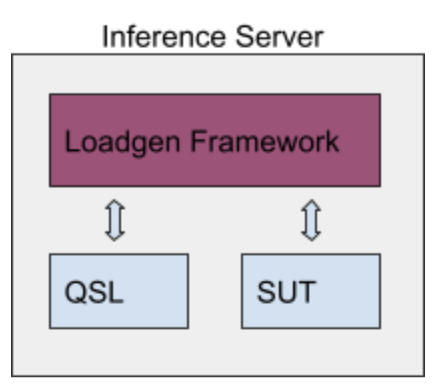
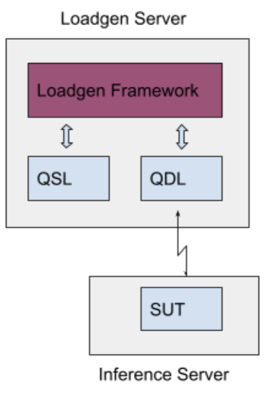

===== loadgen/README.md =====
# Overview {#mainpage}
## Introduction
* The LoadGen is a *reusable* module that *efficiently* and *fairly* measures
the performance of inference systems.
* It generates traffic for scenarios as formulated by a diverse set of experts
in the [MLCommons working group](https://mlcommons.org/).
* The scenarios emulate the workloads seen in mobile devices,
autonomous vehicles, robotics, and cloud-based setups.
* Although the LoadGen is not model or dataset aware, its strength is in its
reusability with logic that is.
## Integration Example and Flow
The following is an diagram of how the LoadGen can be integrated into an
inference system, resembling how some of the MLPerf reference models are
implemented.
<div style="display:flex; flex-flow:row wrap; justify-content: space-evenly;">
<img src="https://raw.githubusercontent.com/mlcommons/inference/master/loadgen/loadgen_integration_diagram.svg" width="500px" style="padding: 20px">
<ol style="padding: 20px">
<li>Benchmark knows the model, dataset, and preprocessing.</li>
<li>Benchmark hands dataset sample IDs to LoadGen.</li>
<li>LoadGen starts generating queries of sample IDs.</li>
<li>Benchmark creates requests to backend.</li>
<li>Result is post processed and forwarded to LoadGen.</li>
<li>LoadGen outputs logs for analysis.<br>
</ol>
</div>
## Useful Links
* [FAQ](README_FAQ.md)
* [LoadGen Build Instructions](README_BUILD.md)
* [LoadGen API](loadgen.h)
* [Test Settings](test_settings.h) -
A good description of available scenarios, modes, and knobs.
* [MLPerf Inference Code](https://github.com/mlcommons/inference) -
Includes source for the LoadGen and reference models that use the LoadGen.
* [MLPerf Inference Rules](https://github.com/mlcommons/inference_policies) -
Any mismatch with this is a bug in the LoadGen.
## Scope of the LoadGen's Responsibilities
### In Scope
* **Provide a reusable** C++ library with python bindings.
* **Implement** the traffic patterns of the MLPerf Inference scenarios and
modes.
* **Record** all traffic generated and received for later analysis and
verification.
* **Summarize** the results and whether performance constraints were met.
* **Target high-performance** systems with efficient multi-thread friendly
logging utilities.
* **Generate trust** via a shared, well-tested, and community-hardened
code base.
### Out of Scope
The LoadGen is:
* **NOT** aware of the ML model it is running against.
* **NOT** aware of the data formats of the model's inputs and outputs.
* **NOT** aware of how to score the accuracy of a model's outputs.
* **NOT** aware of MLPerf rules regarding scenario-specific constraints.
Limitting the scope of the LoadGen in this way keeps it reusable across
different models and datasets without modification. Using composition and
dependency injection, the user can define their own model, datasets, and
metrics.
Additionally, not hardcoding MLPerf-specific test constraints, like test
duration and performance targets, allows users to use the LoadGen unmodified
for custom testing and continuous integration purposes.
## Submission Considerations
### Upstream all local modifications
* As a rule, no local modifications to the LoadGen's C++ library are allowed
for submission.
* Please upstream early and often to keep the playing field level.
### Choose your TestSettings carefully!
* Since the LoadGen is oblivious to the model, it can't enforce the MLPerf
requirements for submission. *e.g.:* target percentiles and latencies.
* For verification, the values in TestSettings are logged.
* To help make sure your settings are spec compliant, use
TestSettings::FromConfig in conjunction with the relevant config file provided
with the reference models.
## Responsibilities of a LoadGen User
### Implement the Interfaces
* Implement the SystemUnderTest and QuerySampleLibrary interfaces and pass
them to the StartTest function.
* Call QuerySampleComplete for every sample received by
SystemUnderTest::IssueQuery.
### Assess Accuracy
* Process the *mlperf_log_accuracy.json* output by the LoadGen to determine
the accuracy of your system.
* For the official models, Python scripts will be provided by the MLPerf model
owners for you to do this automatically.
For templates of how to do the above in detail, refer to code for the demos,
tests, and reference models.
## LoadGen over the Network
For reference, on a high level a submission looks like this:
<div align="center" style="display:flex; flex-flow:row wrap; justify-content: space-evenly;">
<img src="https://raw.githubusercontent.com/mlcommons/inference/master/loadgen/diagram_submission.png" width="300px" style="padding: 20px">
</div>
The LoadGen implementation is common to all submissions, while the QSL (“Query Sample Library”) and SUT (“System Under Test”) are implemented by submitters. QSL is responsible for loading the data and includes untimed preprocessing.
A submission over the network introduces a new component “QDL” (query dispatch library) that is added to the system as presented in the following diagram:
<div align="center" style="display:flex; flex-flow:row wrap; justify-content: space-evenly;">
<img src="https://raw.githubusercontent.com/mlcommons/inference/master/loadgen/diagram_network_submission.png" width="300px" style="padding: 20px">
</div>
QDL is a proxy for a load-balancer, that dispatches queries to SUT over a physical network, receives the responses and passes them back to LoadGen. It is implemented by the submitter. The interface of the QDL is the same as the API to SUT.
In scenarios using QDL, data may be compressed in QSL at the choice of the submitter in order to reduce network transmission time. Decompression is part of the timed processing in SUT. A set of approved standard compression schemes will be specified for each benchmark; additional compression schemes must be approved in advance by the Working Group.
All communication between LoadGen/QSL and SUT is via QDL, and all communication between QDL and SUT must pass over a physical network.
QDL implements the protocol to transmit queries over the network and receive responses. It also implements decompression of any response returned by the SUT, where compression of responses is allowed. Performing any part of the timed preprocessing or inference in QDL is specifically disallowed. Currently no batching is allowed in QDL, although this may be revisited in future.
The MLperf over the Network will run in Server mode and Offline mode. All LoadGen modes are expected to work as is with insignificant changes. These include running the test in performance mode, accuracy mode, find peak performance mode and compliance mode. The same applies for power measurements.
### QDL details
The Query Dispatch Library is implemented by the submitter and interfaces with LoadGen using the same SUT API. All MLPerf Inference SUTs implement the `mlperf::SystemUnderTest` class which is defined in system_under_test.h. The QDL implements `mlperf::QueryDispatchLibrary` class which inherits the `mlperf::SystemUnderTest` class and has the same API and support all existing `mlperf::SystemUnderTest` methods. It has a separate header file query_dispatch_library.h. Using sut with `mlperf::SystemUnderTest` class in LoadGen StartTest is natively upcasting `mlperf::QueryDispatchLibrary` class.
#### QDL Query issue and response over the network
The QDL gets the queries from the LoadGen through
```CPP
void IssueQuery(const std::vector<QuerySample>& samples)
```
The QDL dispatches the queries to the SUT over the physical media. The exact method and implementation for it are submitter specific and would not be specified at MLCommons. Submitter implementation includes all methods required to serialize the query, load balance, drive it to the Operating system and network interface card and send to the SUT.
The QDL receives the query responses over the network from the SUT. The exact method and implementation for it are submitter specific and would not be specified at MLCommons. The submitter implementation includes all methods required to receive the network data from the Network Interface card, go through the Operating system, deserialize the query response, and provide it back to the LoadGen through query completion by:
```CPP
struct QuerySampleResponse {
ResponseId id;
uintptr_t data;
size_t size;
};
void QuerySamplesComplete(QuerySampleResponse* responses,
size_t response_count);
```
#### QDL Additional Methods
In addition to that the QDL needs to implement the following methods that are provided by the SUT interface to the LoadGen:
```CPP
const std::string& Name();
```
The `Name` function returns a known string for over the Network SUTs to identify it as over the network benchmark.
```CPP
void FlushQueries();
```
It is not specified here how the QDL would query and configure the SUT to execute the above methods. The QDL responds to the LoadGen after receiving its own response from the SUT.
### Example
Refer to [LON demo](demos/lon) for a reference example illustrating usage of Loadgen over the network.
## Find Peak Performance Mode
The Find Peak Performance mode can be used to find the optimal queries per second (QPS) for the server scenario.
### Setup
You can setup loadgen to run this mode by setting the `mode` variable in the `test_settings` used to run the test. Using the Python API:
```python
settings = mlperf_loadgen.TestSettings()
settings.server_target_qps = 100
settings.scenario = mlperf_loadgen.TestScenario.Server
settings.mode = mlperf_loadgen.TestMode.FindPeakPerformance
...
mlperf_loadgen.StartTest(sut, qsl, settings)
```
Using the C/C++ API:
```CPP
mlperf::TestSettings settings;
setting.server_target_qps = 100;
settings.scenario = mlperf::TestScenario::Server;
settings.mode = mlperf::TestMode::FindPeakPerformance;
mlperf::LogSettings log_settings;
/*
Construct QSL and SUT
*/
mlperf::StartTest(&sut, &qsl, settings, log_settings);
```
**Note:** Make sure you are setting the TestScenario to server and you are providing an initial target QPS.
### Description
The Find Peak Performance mode works by finding a lower and upper boundary for the optimal QPS. Then performing a binary search between the lower and upper bound to find the optimal QPS.
#### Finding lower and upper boundary
LoadGen begins by running performance mode at the specified target QPS. If the test passes, this value is used as the lower bound; otherwise, an error is raised. The algorithm then guesses the upper bound as twice the target QPS.
Then LoadGen will run performance mode using the upper bound guess. If the test is successful, both the lower bound and upper bound will be doubled. This repeats until the upper bound guess fails the test.
```
[initial_target_qps, 2*initial_target_qps] -> [2*initial_target_qps, 4*initial_target_qps] -> [4*initial_target_qps, 8*initial_target_qps]...
```
Finally, the final lower bound and upper bound are set to their current values. This process assures that the lower bound passes the performance mode, but the upper bound doesn’t.
#### Binary Search
Once the lower and upper bounds are set, binary search can be performed over the range `[lower, upper]`` to find the optimal QPS. If a given QPS fails in performance mode, the optimal value lies below it; if it passes, the optimal is higher.
===== loadgen/test_settings.h =====
/* Copyright 2019 The MLPerf Authors. All Rights Reserved.
Licensed under the Apache License, Version 2.0 (the "License");
you may not use this file except in compliance with the License.
You may obtain a copy of the License at
http://www.apache.org/licenses/LICENSE-2.0
Unless required by applicable law or agreed to in writing, software
distributed under the License is distributed on an "AS IS" BASIS,
WITHOUT WARRANTIES OR CONDITIONS OF ANY KIND, either express or implied.
See the License for the specific language governing permissions and
limitations under the License.
==============================================================================*/
/// \file
/// \brief Provides ways for a client to change the behavior and
/// constraints of the load generator.
/// \details Note: The MLPerf specification takes precedent over any of the
/// comments in this file if there are inconsistencies in regards to how the
/// loadgen *should* work.
/// The comments in this file are indicative of the loadgen implementation.
#ifndef MLPERF_LOADGEN_TEST_SETTINGS_H
#define MLPERF_LOADGEN_TEST_SETTINGS_H
#include <cstdint>
#include <string>
namespace mlperf {
/// \addtogroup LoadgenAPI
/// @{
/// \addtogroup LoadgenAPITestSettings Test Settings
/// \brief This page contains a description of all the scenarios, modes,
/// and log settings as implemented by the LoadGen.
/// @{
///
/// \enum TestScenario
/// * **SingleStream**
/// + Issues queries containing a single sample.
/// + The next query is only issued once the previous one has completed.
/// + Internal LoadGen latency between queries is not included in the
/// latency results.
/// + **Final performance result is:** a percentile of the latency.
/// * **MultiStream**
/// + Issues queries containing N samples.
/// - N is specified by \link
/// mlperf::TestSettings::multi_stream_samples_per_query
/// multi_stream_samples_per_query \endlink.
/// + The next query is only issued once the previous one has completed.
/// + The samples of each query are guaranteed to be contiguous with respect
/// to the order they were loaded in the QuerySampleLibrary.
/// + Latency is tracked and reported on a per-query and per-sample basis.
/// + The latency of a query is the maximum latency of its samples, including
/// any cross-thread communication within the loadgen.
/// + Internal LoadGen latency between queries is not included in the
/// latency results.
/// + **Final performance result is:** a percentile of the query latency.
/// * **Server**
/// + Sends queries with a single sample.
/// + Queries have a random poisson (non-uniform) arrival rate that, when
/// averaged, hits the target QPS.
/// + There is no limit on the number of outstanding queries, as long as
/// the latency constraints are met.
/// + **Final performance result is:** PASS if the a percentile of the latency
/// is under a given threshold. FAIL otherwise.
/// - Threshold is specified by \link
/// mlperf::TestSettings::server_target_latency_ns server_target_latency_ns
/// \endlink.
/// * **Offline**
/// + Sends all N samples to the SUT inside of a single query.
/// + The samples of the query are guaranteed to be contiguous with respect
/// to the order they were loaded in the QuerySampleLibrary.
/// + **Final performance result is:** samples per second.
///
enum class TestScenario {
SingleStream,
MultiStream,
Server,
Offline,
};
///
/// \enum TestMode
/// * **SubmissionRun**
/// + Runs accuracy mode followed by performance mode.
/// + TODO: Implement further requirements as decided by MLPerf.
/// * **AccuracyOnly**
/// + Runs each sample from the QSL through the SUT a least once.
/// + Outputs responses to an accuracy json that can be parsed by a model +
/// sample library specific script.
/// * **PerformanceOnly**
/// + Runs the performance traffic for the given scenario, as described in
/// the comments for TestScenario.
/// * **FindPeakPerformance**
/// + Determines the maximumum QPS for the Server scenario.
/// + Not applicable for SingleStream, MultiStream or Offline scenarios.
///
enum class TestMode {
SubmissionRun,
AccuracyOnly,
PerformanceOnly,
FindPeakPerformance,
};
///
/// \brief Top-level struct specifing the modes and parameters of the test.
///
struct TestSettings {
TestScenario scenario = TestScenario::SingleStream;
TestMode mode = TestMode::PerformanceOnly;
// ==================================
/// \name SingleStream-specific
/**@{*/
/// \brief A hint used by the loadgen to pre-generate enough samples to
/// meet the minimum test duration.
double single_stream_expected_latency_ns = 1000000;
/// \brief The latency percentile reported as the final result.
double single_stream_target_latency_percentile = 0.90;
/**@}*/
// ==================================
/// \name MultiStream-specific
/**@{*/
/// \brief A hint used by the loadgen to pre-generate enough samples to
/// meet the minimum test duration.
/// \brief MultiStream latency is for query (not sample) latency
double multi_stream_expected_latency_ns = 8000000;
/// \brief The latency percentile for MultiStream mode.
double multi_stream_target_latency_percentile = 0.99;
/// \brief The number of samples in each query.
/// \details How many samples are bundled in a query
uint64_t multi_stream_samples_per_query = 8;
/**@}*/
// ==================================
/// \name Server-specific
/**@{*/
/// \brief The average QPS of the poisson distribution.
/// \details note: This field is used as a FindPeakPerformance's lower bound.
/// When you run FindPeakPerformanceMode, you should make sure that this value
/// satisfies performance constraints.
double server_target_qps = 1;
/// \brief The latency constraint for the Server scenario.
uint64_t server_target_latency_ns = 100000000;
/// \brief The latency percentile for server mode. This value is combined with
/// server_target_latency_ns to determine if a run is valid.
/// \details 99% is the default value, which is correct for image models. GNMT
/// should be set to 0.97 (97%) in v0.5.(As always, check the policy page for
/// updated values for the benchmark you are running.)
double server_target_latency_percentile = 0.99;
/// \brief If this flag is set to true, LoadGen will combine samples from
/// multiple queries into a single query if their scheduled issue times have
/// passed.
bool server_coalesce_queries = false;
/// \brief The decimal places of QPS precision used to terminate
/// FindPeakPerformance mode.
int server_find_peak_qps_decimals_of_precision = 1;
/// \brief A step size (as a fraction of the QPS) used to widen the lower and
/// upper bounds to find the initial boundaries of binary search.
double server_find_peak_qps_boundary_step_size = 1;
/// \brief The maximum number of outstanding queries to allow before earlying
/// out from a performance run. Useful for performance tuning and speeding up
/// the FindPeakPerformance mode.
uint64_t server_max_async_queries = 0; ///< 0: Infinity.
/// \brief The number of issue query threads that will be registered and used
/// to call SUT's IssueQuery(). If this is 0, the same thread calling
/// StartTest() will be used to call IssueQuery(). See also
/// mlperf::RegisterIssueQueryThread().
uint64_t server_num_issue_query_threads = 0;
/**@}*/
// ==================================
/// \name Offline-specific
/**@{*/
/// \brief Specifies the QPS the SUT expects to hit for the offline load.
/// The loadgen generates 10% more queries than it thinks it needs to meet
/// the minimum test duration.
double offline_expected_qps = 1;
/// \brief Affects the order in which the samples of the dataset are chosen.
/// If false it concatenates a single permutation of the dataset (or part
/// of it depending on QSL->PerformanceSampleCount()) several times up to the
/// number of samples requested.
/// If true it concatenates a multiple permutation of the dataset (or a
/// part of it depending on QSL->PerformanceSampleCount()) several times
/// up to the number of samples requested.
bool sample_concatenate_permutation = false;
/**@}*/
// ==================================
/// \name Test duration
/// The test runs until **both** min duration and min query count have been
/// met. However, it will exit before that point if **either** max duration or
/// max query count have been reached.
/**@{*/
uint64_t min_duration_ms = 10000;
uint64_t max_duration_ms = 0; ///< 0: Infinity.
uint64_t min_query_count = 100;
uint64_t max_query_count = 0; ///< 0: Infinity.
/**@}*/
// ==================================
/// \name Random number generation
/// There are 4 separate seeds, so each dimension can be changed
/// independently.
/**@{*/
/// \brief Affects which subset of samples from the QSL are chosen for
/// the performance sample set and accuracy sample sets.
uint64_t qsl_rng_seed = 0;
/// \brief Affects the order in which samples from the performance set will
/// be included in queries.
uint64_t sample_index_rng_seed = 0;
/// \brief Affects the poisson arrival process of the Server scenario.
/// \details Different seeds will appear to "jitter" the queries
/// differently in time, but should not affect the average issued QPS.
uint64_t schedule_rng_seed = 0;
/// \brief Affects which samples have their query returns logged to the
/// accuracy log in performance mode.
uint64_t accuracy_log_rng_seed = 0;
/// \brief Probability of the query response of a sample being logged to the
/// accuracy log in performance mode
double accuracy_log_probability = 0.0;
/// \brief Target number of samples that will have their results printed to
/// accuracy log in performance mode for compliance testing
uint64_t accuracy_log_sampling_target = 0;
/// \brief Variables for running test05 from native config. A boolean that
/// determines whether or not to run test05 and three random seed to run the
/// test
bool test05 = false;
uint64_t test05_qsl_rng_seed = 0;
uint64_t test05_sample_index_rng_seed = 0;
uint64_t test05_schedule_rng_seed = 0;
/**@}*/
// ==================================
/// \name Performance Sample modifiers
/// \details These settings can be used to Audit Performance mode runs.
/// In order to detect sample caching by SUT, performance of runs when only
/// unique queries (with non-repeated samples) are issued can be compared with
/// that when the same query is repeatedly issued.
/**@{*/
/// \brief Prints measurement interval start and stop timestamps to std::cout
/// for the purpose of comparison against an external timer
bool print_timestamps = false;
/// \brief Allows issuing only unique queries in Performance mode of any
/// scenario \details This can be used to send non-repeat & hence unique
/// samples to SUT
bool performance_issue_unique = false;
/// \brief If true, the same query is chosen repeatedley for Inference.
/// In offline scenario, the query is filled with the same sample.
bool performance_issue_same = false;
/// \brief Offset to control which sample is repeated in
/// performance_issue_same mode.
/// Value should be within [0, performance_sample_count)
uint64_t performance_issue_same_index = 0;
/// \brief Overrides QSL->PerformanceSampleCount() when non-zero
uint64_t performance_sample_count_override = 0;
/// \brief Specifies the number of samples for accuracy evaluation.
/// When non-zero, accuracy mode generates sample indices [0,
/// accuracy_sample_count_override). When zero (default), uses
/// performance_sample_count.
uint64_t accuracy_sample_count_override = 0;
/// \brief Measure token latencies
bool use_token_latencies = false;
/// Token latency parameters
uint64_t server_ttft_latency = 100000000;
uint64_t server_tpot_latency = 100000000;
/// \brief Infer token latencies
bool infer_token_latencies = false;
uint64_t token_latency_scaling_factor;
/**@}*/
/// \brief Load mlperf parameter config from file.
int FromConfig(const std::string &path, const std::string &model,
const std::string &scenario, int conf_type = 1);
};
///
/// \enum LoggingMode
/// Specifies how and when logging should be sampled and stringified at
/// runtime.
/// * **AsyncPoll**
/// + Logs are serialized and output on an IOThread that polls for new logs at
/// a fixed interval. This is the only mode currently implemented.
/// * **EndOfTestOnly**
/// + TODO: Logs are serialzied and output only at the end of the test.
/// * **Synchronous**
/// + TODO: Logs are serialized and output inline.
enum class LoggingMode {
AsyncPoll,
EndOfTestOnly,
Synchronous,
};
///
/// \brief Specifies where log outputs should go.
///
/// By default, the loadgen outputs its log files to outdir and
/// modifies the filenames of its logs with a prefix and suffix.
/// Filenames will take the form:
/// "<outdir>/<datetime><prefix>summary<suffix>.txt"
///
/// Affordances for outputing logs to stdout are also provided.
///
struct LogOutputSettings {
std::string outdir = ".";
std::string prefix = "mlperf_log_";
std::string suffix = "";
bool prefix_with_datetime = false;
bool copy_detail_to_stdout = false;
bool copy_summary_to_stdout = false;
};
///
/// \brief Top-level log settings.
///
struct LogSettings {
LogOutputSettings log_output;
LoggingMode log_mode = LoggingMode::AsyncPoll;
uint64_t log_mode_async_poll_interval_ms = 1000; ///< TODO: Implement this.
bool enable_trace = true;
};
/// @}
/// @}
} // namespace mlperf
#endif // MLPERF_LOADGEN_TEST_SETTINGS_H

